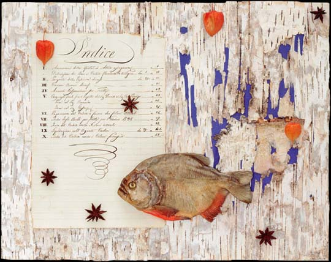
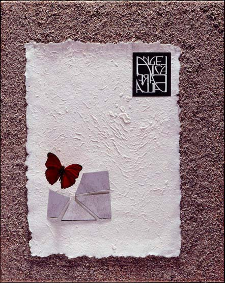
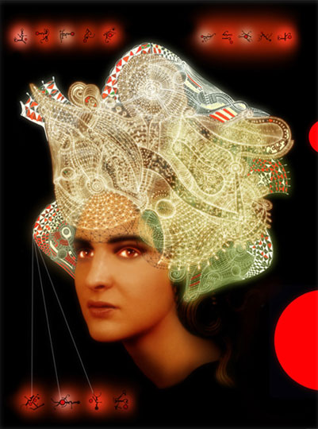
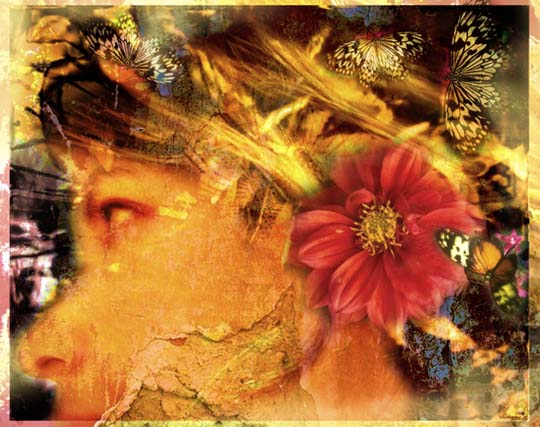
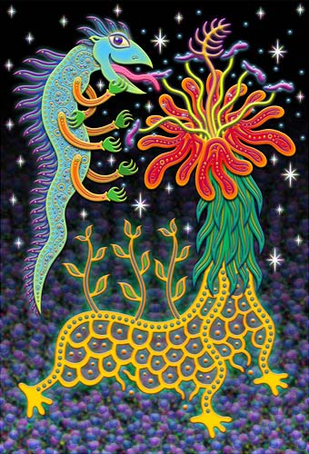
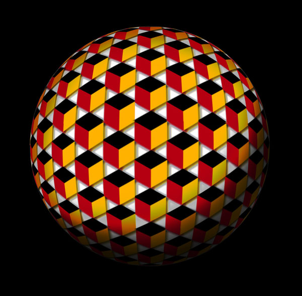
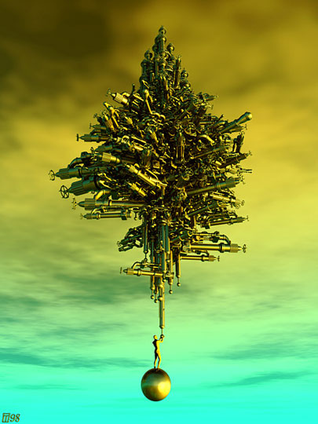

IMAGES OF THE DAY 59
02/01/2023 - 02/10/2023

Shadows of the World
Imaginary Gardens
Portolano
by Carmen Dell'Aversano
02/01/2023
Click image to access artist's full exhibit
Shadows of the World 
Imaginary Gardens
Angelica
by Carmen Dell'Aversano
02/02/2023
Click image to access artist's full exhibit
Drawn and Painted
Digital Emulation of Traditional Media
After John Sargent
by Dave Acton
02/03/2023
Click image to access artist's full exhibit

Surreal Art 
Subconcious Worlds
Portrait 1
by Andrej Rudavsky
02/04/2023
Click image to access artist's full exhibit
Mixed Technique 
Abstract and Expressionistic
Bumbaryca
by Skiff Skovenborg
02/05/2023
Click image to access artist's full exhibit
Mixed Technique 
An Art of High Spirits
Future -Type Amphibians and Wandering Plants
by Masanta
02/06/2023
Click image to access artist's full exhibit
Algorithmic 
Planet Cubicle
by Richard Canington
02/07/2023
Click image to access artist's full exhibit
Dynamic Painting
Generative Art
"The place where only yesterday"
by San Base
02/08/2023
Click image to access artist's full exhibit

3D Rendered 
Oyonale
Atlas
by Gilles Tran
02/09/2023
Click image to access artist's full exhibit
Drawn and Painted Art
ORDIGART
0104-Landscape 1207
by Constantin Alexiades
02/10/2023
Click image to access artist's full exhibit

BACK TO IMAGES OF THE DAY 58
NEXT